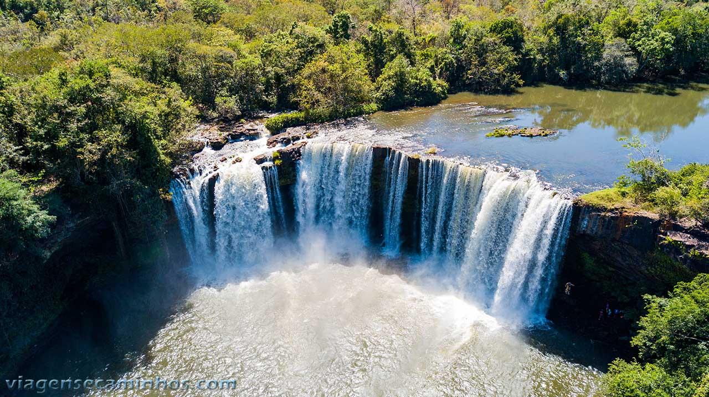
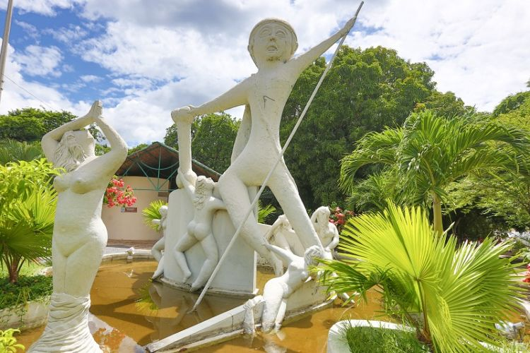
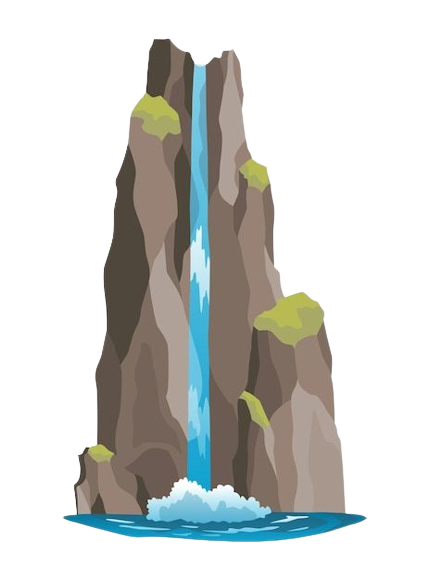
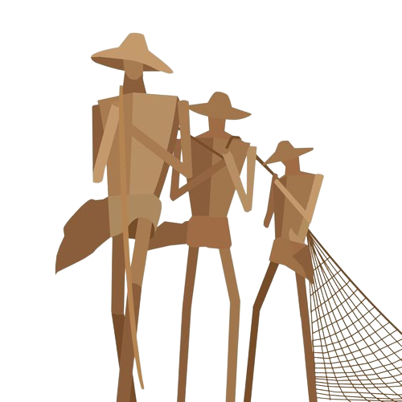
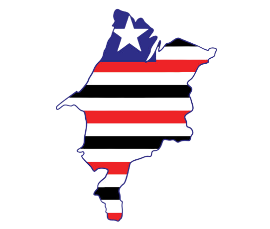
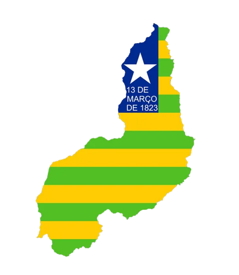

Meus destinos pelo Maranhão e Piauí
Morros- Maranhão

Cidade com pontos turísticos de natureza indescritível: visite a Pousada Pedra Grande e se aventure no bauneário repleto de diversão para a família e conheça pontos da região mais naturais de serem deslumbrados. É simples e belo!
Praia de São Luís- Maranhão

As vistas das praias de São Luís são consideravelmente únicas! Descubra como é maravilhar um pôr-do Sol com uma brisa refrescante sentindo o cheiro fresco de comidas marinhas e do conjunto espetacular do mar e areia.
Carolinas- Maranhão
Conhecida por suas lindas cachoeiras, Carolinas fica a 800 quilômetros de São Luís e, em pouco mais de seis mil quilômetros quadrados, já foram encontradas 89 cachoeiras e mais de 400 nascentes.
Encontro dos rios, Teresina- Piauí
Parque Ambiental Encontro dos Rios é uma área de relevante Interesse Ecológico - ARIE, ou seja, reserva ambiental localizada na zona norte de Teresina. É ponto de passagem obrigatório aos interessados em comprar artesanato, saborear comida regional e desfrutar um belo pôr do sol sobre o encontro das escuras águas do rio Poti e as barrentas e velozes águas do rio Parnaíba.



